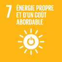
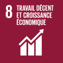
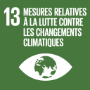
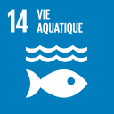
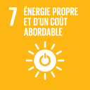
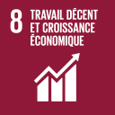
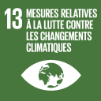
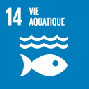

En 2019 les consommations d’énergie ont baissé de de manière significative notamment du fait du changement de périmètre (transfert des filiales du pole SFS à BPCE). Rapporté au poste de travail, on observe une baisse de 15 % des consommations d’énergies entre 2018 et 2019. Dans la continuité de l’engagement pris en 2015, Natixis a signé en octobre 2018 un nouveau partenariat « Paris Action Climat » et entend ainsi participer aux objectifs de développement durable (ODD) compatibles avec le Plan Climat de la capitale. En complément, Natixis s’est fixé un objectif de réduction de 30 % des consommations d’énergie de ses immeubles franciliens entre 2010 et 2020. Cet objectif a d’ores et déjà été dépassé avec 40 % de baisse des consommations d'énergie par m² depuis 2010.
Les énergies renouvelables ne cessent de battre des records d’installation : 175 GW ont été mis en production en 2018, contre 157 GW en 2017, pour un total de 2 356 GW à travers le monde. Les nouvelles capacités solaires installées en 2018 (98 GW) ont été plus importantes que les nouvelles capacités de production électrique à partir d’énergies fossiles. La proportion de production électrique émanant de sources renouvelables a atteint 26,1% en 2018 dans le monde. En 2019, Natixis s’est à nouveau positionnée comme un acteur de premier plan dans les financements des énergies renouvelables, notamment en Asie et Amérique latine et dans le secteur de l’éolien en mer en Europe.